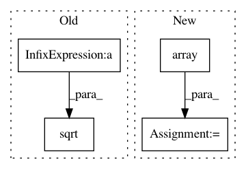

bf41af913e2839139e9927118bcf538fb134d71c,scipy/spatial/distance.py,,cdist,#Any#Any#Any#Any#Any#Any#Any#,1723
Before Change
normsB)
elif mstr in set(["correlation", "co"]):
XA2 = XA - XA.mean(1)[:, np.newaxis]
XB2 = XB - XB.mean(1)[:, np.newaxis]
//X2 = X - np.matlib.repmat(np.mean(X, axis=1).reshape(m, 1), 1, n)
normsA = np.sqrt(np.sum(XA2 * XA2, axis=1))
normsB = np.sqrt(np.sum(XB2 * XB2, axis=1))
_distance_wrap.cdist_cosine_wrap(_convert_to_double(XA2),
_convert_to_double(XB2),
_convert_to_double(dm),
_convert_to_double(normsA),
After Change
_cosine_cdist(XA, XB, dm)
elif mstr in set(["correlation", "co"]):
XA = np.array(XA, dtype=np.double, copy=True)
XB = np.array(XB, dtype=np.double, copy=True)
XA -= XA.mean(axis=1)[:, np.newaxis]
XB -= XB.mean(axis=1)[:, np.newaxis]
_cosine_cdist(XA, XB, dm)
elif mstr in set(["mahalanobis", "mahal", "mah"]):
In pattern: SUPERPATTERN
Frequency: 3
Non-data size: 4
Instances
Project Name: scipy/scipy
Commit Name: bf41af913e2839139e9927118bcf538fb134d71c
Time: 2015-01-12
Author: larsmans@gmail.com
File Name: scipy/spatial/distance.py
Class Name:
Method Name: cdist
Project Name: nipy/dipy
Commit Name: 7341ea4b72276c36329d618353f54c90bef031fd
Time: 2017-07-05
Author: arokem@gmail.com
File Name: dipy/reconst/odf.py
Class Name:
Method Name: gfa
Project Name: neurosynth/neurosynth
Commit Name: 66e36bf51b453bb6b92d330d4d7845bdfbdfee99
Time: 2018-05-04
Author: tyarkoni@gmail.com
File Name: neurosynth/base/dataset.py
Class Name: Dataset
Method Name: get_studies